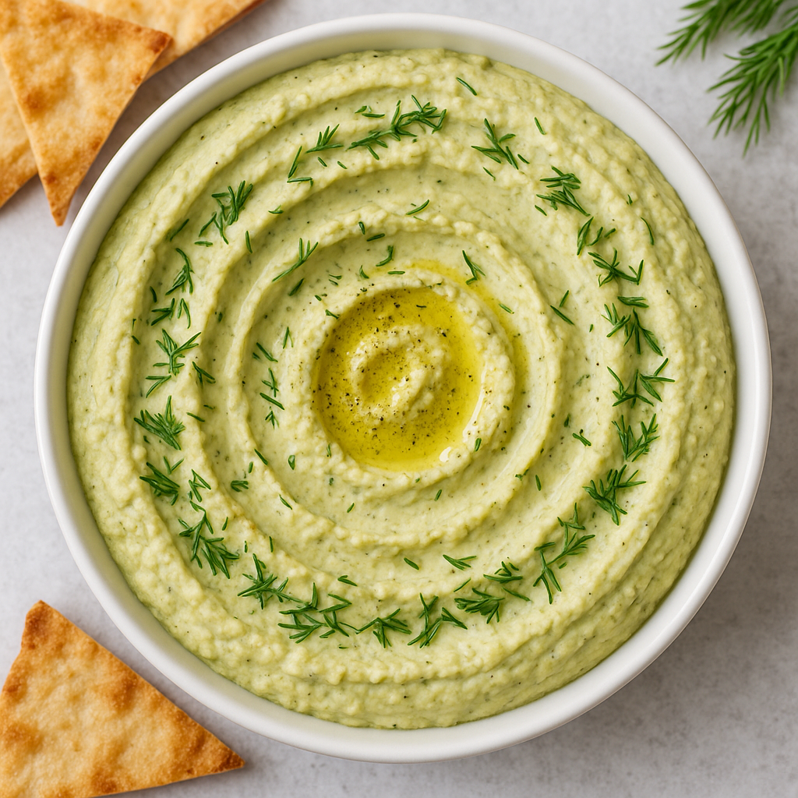

Dill Hummus

Creamy chickpea hummus with bright lemon and fresh dill.
Yield: ~2 cups (about 6 servings) |
Prep Time: 10 minutes |
Cook Time: 12 minutes
Dill Hummus Ingredients
- 1–2 cloves fresh garlic, sliced
- Juice of 1 lemon
- 1 (14-ounce) can chickpeas, drained and rinsed
- ½ teaspoon baking soda
- ¼ cup tahini
- 2 tablespoons olive oil, plus more for serving
- 3–4 tablespoons fresh dill, chopped
- ¼ cup iced water (more as needed)
- Salt and freshly ground black pepper, to taste
Directions
- Place sliced garlic and lemon juice in a food processor bowl and let sit while you cook the
chickpeas.
- Simmer chickpeas with baking soda in water for about 12 minutes, until very soft. Drain, rinse in
cool water, and remove any loose skins.
- Add chickpeas, tahini, olive oil, dill, salt, and pepper to the food processor and blend until
smooth, slowly adding iced water until creamy.
- Taste and adjust seasoning. Spread onto a plate, drizzle with more olive oil, and garnish with extra
dill and pepper.